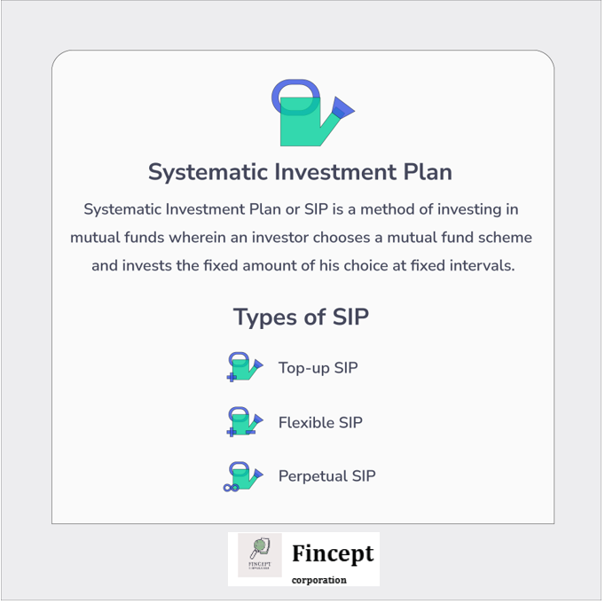

SIP - Systematic Investment Plan
Systematic Investment Plan or SIP is a method of investing in mutual funds wherein an investor chooses a mutual fund scheme and invests the fixed amount of his choice at fixed intervals.
SIP investment plan is about investing a small amount over time rather than investing one-time huge amount resulting in a higher return.
How Does SIP work?
Once you apply for one or more SIP plans, the amount is automatically debited from your bank account and invested in the mutual funds you have purchased at the predetermined time interval.
At the end of the day, you will be allocated the units of mutual funds depending on the NAV of the mutual fund.
With every investment in an SIP plan in India, the additional units are added to your account depending on the market rate. With every investment, the amount being reinvested is larger and so is the return on those investments.
It is at the discretion of the investor to receive the returns at the end of the SIP’s tenure or at a periodic interval.
Let us understand with an example
Suppose you want to invest in a mutual fund and you have set aside a sum of 1 Lakh Rupees to invest in the same. Now there are two ways in which you can make this investment.
Either you can make a one time payment of Rs 1 Lakh in the mutual fund, also known as lump sum investment. Or you can choose to invest via Systematic Investment Plan or SIP.
You need to start an SIP of a set amount. Say Rs 500. Then Rs 500 will be deducted from your account and auto credited to the mutual fund you want to invest in, at a certain fixed date every month. This will continue till the time period
When to Invest in SIP?
SIP investments can be started anytime ensuring minimum risk with the correct suitable scheme plan for the investor.
It is very important for the investor to choose the scheme which suits his long-term goals well. Hence, there is no suitable time frame within which an investor should start a SIP investment plan, the sooner the better.
Types of SIP
Understanding the different types of SIP will help you choose the right scheme as per your goals.
Here are the types of Systematic Investment Plans available-
Top-up SIP
The Top-up SIP allows you to increase your investment amount periodically giving you the flexibility to invest higher when you have a higher income or available amount to be invested.
This also helps in making the most out of the investments by investing in the best and high-performing funds at regular intervals.
Flexible SIP
As the name suggests, Flexible SIP plan carries flexibility of the amount you want to invest. An investor can increase or decrease the amount to be invested as per his own cash flow needs or preferences.
Perpetual SIP
A perpetual SIP Plan allows you to carry on the investments without an end to the mandate date.
Generally, an SIP carries an end date after 1 Year, 3 Years or 5 years of investment. The investor can hence withdraw the amount invested whenever he wishes or as per his financial goals.
Benefits of Investing in SIP
There are several benefits of investing in SIP over Lumpsum. Some of them are listed below
Makes You a Disciplined Investor
SIP can be the best investment option for you if you do not possess superior financial knowledge about the way the market moves.
You do not have to spend your time analysing the market movements or the right time to invest in.
With SIP since the money gets auto-deducted from your account and goes to your mutual funds, you can sit back and relax. Further, unlike lump sum investments, it ensures that you are working actively towards making your investments grow because of the periodicity.
Rupee Cost Averaging Factor
With SIP comes the advantage of rupee cost averaging.
With SIP since your investment amount is constant, for a longer period of time, with rupee cost averaging you can take advantage of market volatility. The fixed amount you invest by means of an SIP averages out the value of each unit.
So you can buy more units when the market is low and buy fewer units when the markets are high, lowering down your average cost per unit.
Power Of Compounding
SIP is a disciplined way of investing and ensures you constantly strive to make your investments grow.
The automation makes sure your investment grows as opposed to lump sum where you may forget to invest sometime. The small amount you invest daily grows up to a large corpus due as a sum of your contribution and the returns compounded over the years.
Let’s see the projected returns using Groww SIP Calculator, to see how much your money grows in 20 years if you contribute 1000 Rs a month, assuming average returns of 10%. The total amount grows to Rs 7,18,259 due to the compounding effect.
As discussed before, with an SIP you can relax about your investments. Just by submitting an application form you can initiate an auto debit or submit post-dated cheques to start the SIP.
According to how much you want your final amount to be, you can select the appropriate amount to start an SIP with.
Related Mutual Fund Pages
Disclaimer: The views expressed here are of the author and do not reflect those of Groww. Mutual funds are subject to market risks, please read the scheme documents carefully before investing.